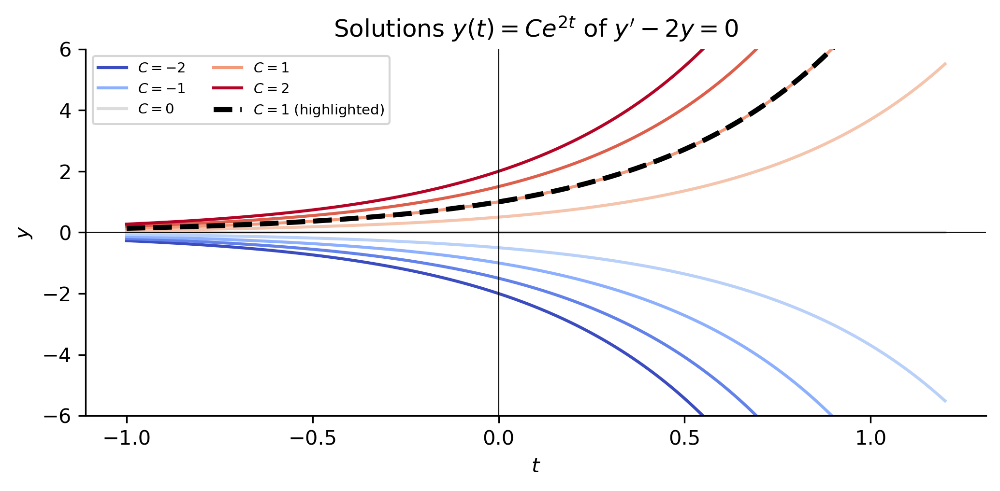
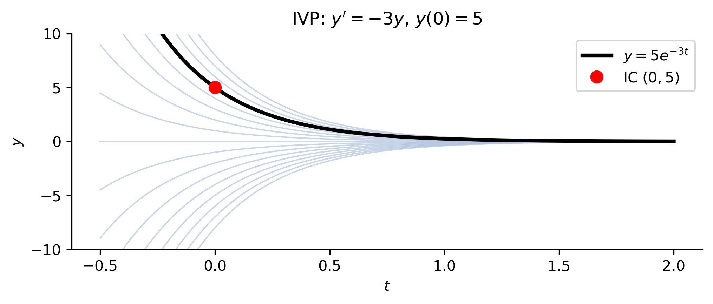
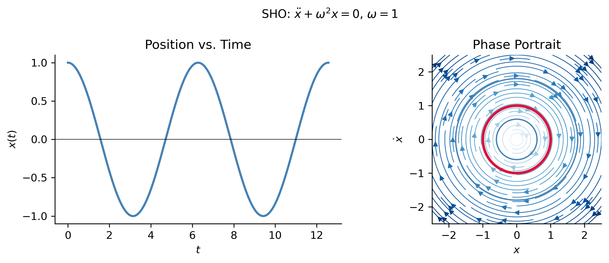
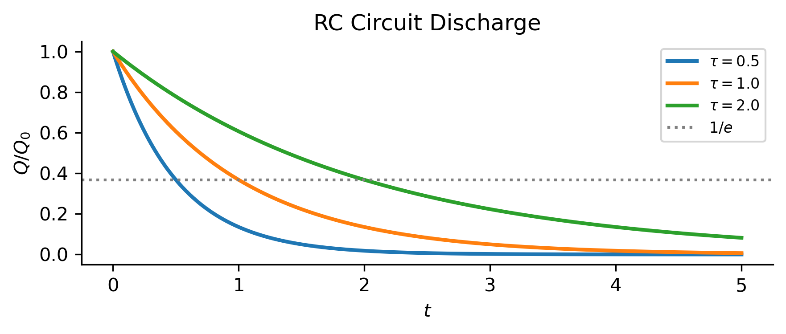
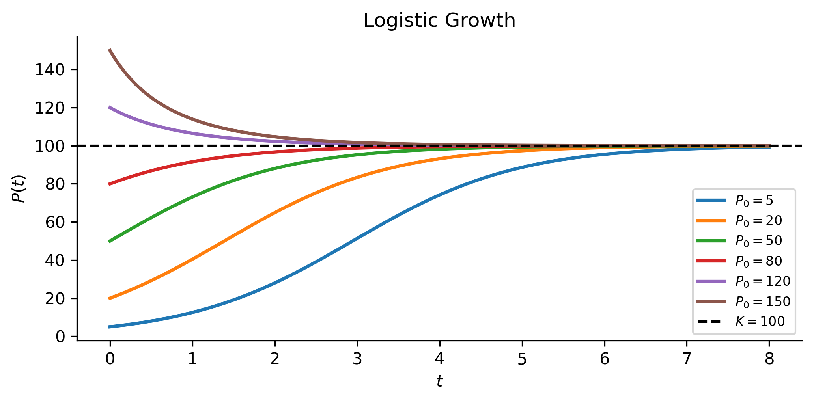

Introduction to Differential Equations
MATH 341 — Notes 1
University of Scranton
2026-05-30
Goals
What We Will Cover
Define what a differential equation is and what it means for a function to be a solution
Classify ODEs by:
- order
- linearity / nonlinearity
- homogeneity
- constant vs. variable coefficients
- autonomy
Introduce initial value problems (IVPs)
Survey classical sources of ODEs in applications
Note
This material corresponds to Section 1.1 of Logan (2015).
What Is a Differential Equation?
The Big Idea
Key Point
A differential equation is any equation involving an unknown function together with one or more of its derivatives.
The goal is to find a function — not a number.
Contrast with algebra:
| Type | Equation | Unknown |
|---|---|---|
| Algebraic | \(x^2 - 4 = 0\) | a number \(x = \pm 2\) |
| Differential | \(\dfrac{dy}{dx} = y\) | a function \(y(x) = Ce^x\) |
Important
Solutions to differential equations are functions, not numbers.
ODEs vs. PDEs
- Ordinary Differential Equation (ODE)
- Involves a function of a single independent variable
\[\ddot{x} + \omega^2 x = 0 \quad \leftarrow \text{ one variable } t\]
- Partial Differential Equation (PDE)
- Involves a function of several independent variables
\[u_t = k\,u_{xx} \quad \leftarrow \text{ two variables } x, t \quad \text{(heat equation)}\]
Note
In this course we focus exclusively on ODEs.
Derivative notation is not standardized — see the footnote in the notes for the Leibniz, prime, dot, subscript, and operator conventions.1
Classifying ODEs
Order
The order of an ODE is the order of the highest derivative present.
| Equation | Order |
|---|---|
| \(y' = ky\) | 1st |
| \(y'' + \omega^2 y = 0\) | 2nd |
| \(y''' - y'' + y = \sin t\) | 3rd |
General form of an \(n\)th-order ODE: \[F\!\left(t, y, y', y'', \ldots, y^{(n)}\right) = 0\]
or solved for the highest derivative: \[y^{(n)} = f\!\left(t, y, y', \ldots, y^{(n-1)}\right)\]
Linearity
An ODE is linear if it has the form: \[a_n(t)\,y^{(n)} + \cdots + a_1(t)\,y' + a_0(t)\,y = g(t)\]
where the \(a_k(t)\) and \(g(t)\) depend only on \(t\), not on \(y\).
| Equation | Linear? | Reason |
|---|---|---|
| \(y'' + 3y' - 2y = e^t\) | ✓ | Coefficients depend only on \(t\) |
| \(y'' + \sin(y) = 0\) | ✗ | \(\sin(y)\) is nonlinear in \(y\) |
| \(y' = y^2\) | ✗ | \(y^2\) is nonlinear in \(y\) |
| \(t^2 y'' + ty' + y = 0\) | ✓ | Coefficients \(t^2, t, 1\) depend only on \(t\) |
Homogeneity, Coefficients, Autonomy
Homogeneous — forcing term \(g(t) \equiv 0\): \[a_n(t)\,y^{(n)} + \cdots + a_0(t)\,y = 0\]
Inhomogeneous — \(g(t) \not\equiv 0\).
Tip
The general solution of an inhomogeneous linear ODE = particular solution + general solution of the homogeneous equation.
Constant coefficients — each \(a_k\) is a constant number (not a function of \(t\)).
Variable coefficients — at least one \(a_k\) depends on \(t\).
Autonomous — \(t\) does not appear explicitly on the right-hand side: \[y' = f(y) \;\text{(autonomous)} \qquad \text{vs.} \qquad y' = f(t,y) \;\text{(non-autonomous)}\]
Classification Examples
Example 1 — Logistic Equation
\[\frac{dP}{dt} = rP\!\left(1 - \frac{P}{K}\right)\] 1st-order, nonlinear, autonomous — population growth with carrying capacity \(K\).
Example 2 — Simple Harmonic Oscillator
\[\frac{d^2x}{dt^2} + \omega^2 x = 0\] 2nd-order, linear, homogeneous, constant-coefficient, autonomous
Example 3 — Driven Oscillator
\[\frac{d^2x}{dt^2} + 2\gamma\frac{dx}{dt} + \omega^2 x = F_0\cos(\Omega t)\] 2nd-order, linear, inhomogeneous, non-autonomous, constant coefficients
Classification Examples (cont.)
Example 4 — Euler’s Equation
\[t^2 y'' + t y' - 4y = 0\] 2nd-order, linear, homogeneous, variable (non-constant) coefficients
Solutions to ODEs
What Is a Solution?
A solution of an ODE on an interval \(I\) is a function \(y = \phi(t)\) that:
- Is differentiable (sufficiently many times) on \(I\), and
- Satisfies the equation for every \(t \in I\).
Example 5 — General and Particular Solutions
Consider \(y' - 2y = 0\). Check \(y(t) = Ce^{2t}\): \[(Ce^{2t})' - 2(Ce^{2t}) = 2Ce^{2t} - 2Ce^{2t} = 0 \checkmark\]
- \(y(t) = Ce^{2t}\) for any constant \(C\) — general solution (one-parameter family)
- With \(y(0) = 3\): \(C = 3\), so \(y(t) = 3e^{2t}\) — particular solution
A 1st-order ODE \(\to\) one-parameter family of solutions
A 2nd-order ODE \(\to\) two-parameter family, and so on.
Visualizing the Family of Solutions
Initial Value Problems
Definition
Initial Value Problem (IVP) — 1st Order
\[\begin{cases} y' = f(t, y) \\ y(t_0) = y_0 \end{cases}\]
\(n\)th-order IVP: specify \(y(t_0), y'(t_0), \ldots, y^{(n-1)}(t_0)\).
The initial conditions geometrically select a single solution curve from the entire family.
Existence & Uniqueness — Picard–Lindelöf theorem:
If \(f\) and \(\partial f/\partial y\) are continuous near \((t_0, y_0)\), then the IVP has a unique solution on some interval containing \(t_0\).
IVP Example
Example 6
Solve: \(\quad y' = -3y, \quad y(0) = 5\).
Step 1. General solution: \(y(t) = Ce^{-3t}\).
Step 2. Apply IC: \(C e^0 = 5 \;\Rightarrow\; C = 5\).
Solution: \(\boxed{y(t) = 5e^{-3t}}\)

Where Do ODEs Come From?
Three Major Sources
ODEs arise wherever a quantity’s rate of change is related to its current state.
We survey three classical sources:
- 🔧 Classical Mechanics — Newton, Lagrange, Hamilton
- ⚡ Electrical Circuits — Kirchhoff’s laws
- 🌱 Population Dynamics — Malthus, Verhulst, Lotka–Volterra
Classical Mechanics
Newton’s Second Law
\[F = ma = m\ddot{x}\]
Spring-mass system (Hooke’s law: \(F = -kx\)):
\[m\ddot{x} = -kx \quad \Longrightarrow \quad \ddot{x} + \omega^2 x = 0, \quad \omega = \sqrt{k/m}\]
2nd-order, linear, homogeneous, constant-coefficient, autonomous
General solution: \(x(t) = A\cos(\omega t) + B\sin(\omega t)\)
Describes pure oscillation at angular frequency \(\omega\)
Lagrangian Mechanics
Reformulates Newton’s laws using energy instead of force.
Define the Lagrangian \(L = T - V\) (kinetic \(-\) potential energy).
The Euler–Lagrange equation: \[\frac{d}{dt}\!\left(\frac{\partial L}{\partial \dot{q}}\right) - \frac{\partial L}{\partial q} = 0\]
For the SHO: \(T = \tfrac{1}{2}m\dot{x}^2\), \(V = \tfrac{1}{2}kx^2\), so \(L = \tfrac{1}{2}m\dot{x}^2 - \tfrac{1}{2}kx^2\).
\[\frac{\partial L}{\partial \dot{x}} = m\dot{x}, \quad \frac{\partial L}{\partial x} = -kx\]
\[\Rightarrow \quad \frac{d}{dt}(m\dot{x}) + kx = 0 \quad \Longrightarrow \quad m\ddot{x} + kx = 0 \checkmark\]
Hamiltonian Mechanics
Describes mechanics via total energy \(H = T + V\) in terms of position \(q\) and momentum \(p = m\dot{q}\).
Hamilton’s equations — a system of two 1st-order ODEs: \[\dot{q} = \frac{\partial H}{\partial p}, \qquad \dot{p} = -\frac{\partial H}{\partial q}\]
For the SHO: \(H = \dfrac{p^2}{2m} + \dfrac{1}{2}kq^2\)
\[\dot{q} = \frac{p}{m}, \qquad \dot{p} = -kq \quad \Rightarrow \quad \ddot{q} + \omega^2 q = 0 \checkmark\]
Tip
Any \(n\)th-order ODE can be converted to a system of \(n\) first-order ODEs. This is standard practice in both theory and numerical computation.
Three Frameworks — One ODE
| Framework | Starting Point | Result |
|---|---|---|
| Newton | \(F = ma\) | \(m\ddot{x} + kx = 0\) |
| Lagrange | Euler–Lagrange eq. | \(m\ddot{x} + kx = 0\) |
| Hamilton | Hamilton’s eqs. | \(m\ddot{x} + kx = 0\) |
The ODE is the fundamental mathematical object encoding the physics. Different frameworks are different roads to the same destination.
SHO: Solution and Phase Portrait

Tip
The phase portrait encodes the full family of solutions. Closed curves = periodic motion.
Electrical Circuits
The RLC Circuit
| Element | Voltage–Current Relation |
|---|---|
| Resistor \(R\) | \(V_R = RI\) |
| Capacitor \(C\) | \(I = C\,\dot{V}_C\) |
| Inductor \(L\) | \(V_L = L\,\dot{I}\) |
Kirchhoff’s voltage law: \(V_L + V_R + V_C = E(t)\)
With \(I = \dot{Q}\) and \(V_C = Q/C\):
\[\boxed{L\ddot{Q} + R\dot{Q} + \frac{Q}{C} = E(t)}\]
2nd-order, linear, constant coefficients — identical in form to the driven oscillator!
Mechanical–Electrical Analogy
| Mechanical | Electrical |
|---|---|
| Mass \(m\) | Inductance \(L\) |
| Damping \(b\) | Resistance \(R\) |
| Spring constant \(k\) | \(1/C\) |
| Force \(F(t)\) | EMF \(E(t)\) |
| Displacement \(x\) | Charge \(Q\) |
RC circuit (no inductor, no drive): \(\quad R\dot{Q} + Q/C = 0 \quad\Rightarrow\quad \dot{Q} = -Q/(RC)\)

Population Dynamics
Exponential and Logistic Growth
Malthusian / Exponential growth (Malthus, 1798): \[\frac{dP}{dt} = rP, \quad P(0)=P_0 \quad\Rightarrow\quad P(t) = P_0 e^{rt}\]
Predicts unlimited growth (\(r>0\)) or extinction (\(r<0\)). Unrealistic long-term.
Logistic growth (Verhulst, 1838): \[\frac{dP}{dt} = rP\!\left(1-\frac{P}{K}\right), \quad P(0)=P_0\]
Exact solution: \(\displaystyle P(t) = \frac{K}{1+\left(\dfrac{K}{P_0}-1\right)e^{-rt}}\)
As \(t\to\infty\): \(P(t)\to K\) — the stable equilibrium (carrying capacity).
Logistic Growth: Solution Curves

Tip
Solutions above \(K\) decrease; solutions below \(K\) increase. \(P=K\) is a stable equilibrium; \(P=0\) is unstable.
Predator–Prey: Lotka–Volterra
When two species interact we need a system of ODEs.
The Lotka–Volterra equations: \[\frac{dx}{dt} = \alpha x - \beta xy, \qquad \frac{dy}{dt} = \delta xy - \gamma y\]
- \(x(t)\) = prey population; \(y(t)\) = predator population
- Nonlinear (cross-product terms \(xy\))
- No closed-form solution in general
- Exhibits oscillatory behavior — we will return to this when we study systems of ODEs
Summary
Key Takeaways
A differential equation relates an unknown function to its derivatives. Solutions are functions, not numbers.
ODEs are classified by order, linearity, homogeneity, coefficient type, and autonomy.
An IVP pins down a unique solution by specifying initial data. The Picard–Lindelöf theorem guarantees existence and uniqueness under mild conditions.
Newton, Lagrange, and Hamilton all produce the same ODE for the simple harmonic oscillator — the ODE is the fundamental object.
ODEs appear everywhere: mechanics (\(F=ma\)), circuits (Kirchhoff), and biology (logistic growth, Lotka–Volterra).
Note
Next: Separable equations and exact solutions — Logan §1.2–1.3.
References
Logan, J David. 2015. A First Course in Differential Equations Third Edition.

MATH 341 Differential Equations — Notes 1